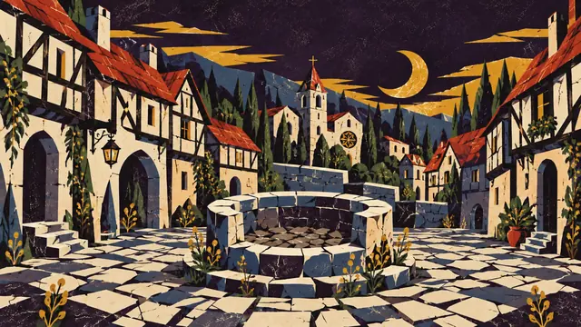
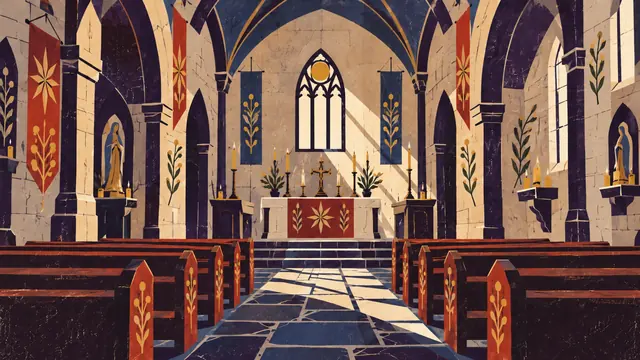
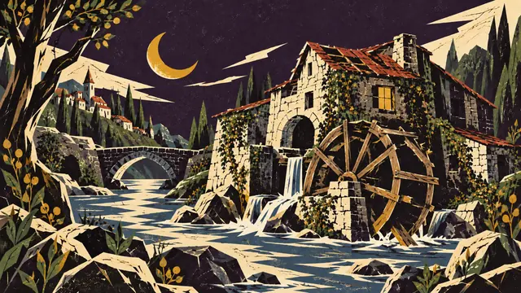
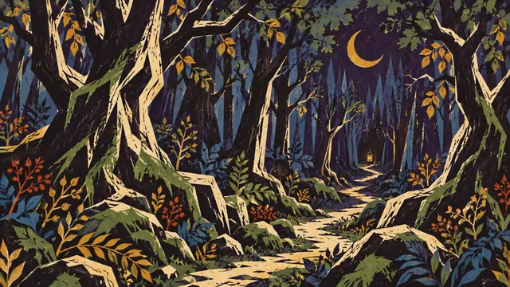
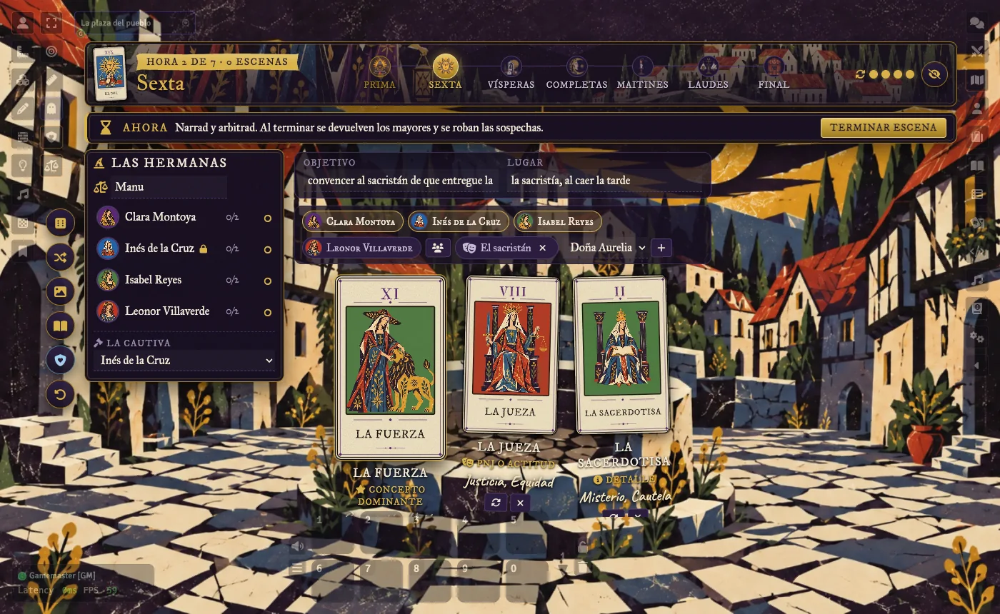
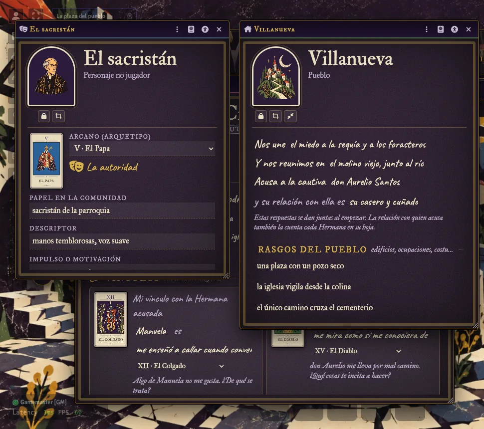
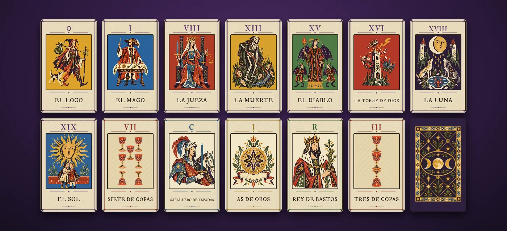

MR-
Una acusada, siete horas y un pueblo que sospecha.
El juego narrativo de Hernán D'Andreis y Keith Monardes (Primigenia Austral), con todo el ritual resuelto en Foundry.
Arcanos mayores como conceptos de escena y menores como sospechas. Cada carta, con su número y su nombre.
La tira de las siete horas y una barra «Ahora» que propone el siguiente paso con su botón.
Una para conservar, otra para entregar. Nadie mira hasta Laudes, donde se suma y se acusa al máximo.
Hermana, PNJ y pueblo, con la carta del arcano en cada vínculo y modo oscuro.
Pausa, Velo y Tarjeta X, anónimas y al instante, más las líneas y velos acordados.
Texto, contraste, fuente legible y movimiento a tu medida. Código MIT.
Ocho escenas ilustradas en un compendio: la plaza, la iglesia, la sacristía, el molino, la ermita, el bosque, el cementerio y el calabozo.




De Prima a la sentencia, el sistema marca la hora, suena la campana y avisa en el chat.
Abre escena, elige quién actúa, roba los mayores, termina. El concepto dominante, el segundo y los detalles, ordenados por número; las inversiones, contadas.
Pasa el cursor por cualquier carta y se amplía en toda su magnitud, en el chat, la mesa, las fichas y los mazos.
Y en Laudes, el recuento hecho: lo entregado suma a quien lo recibe, y con empate máximo, todas son acusadas.


La hoja impresa como frases que se rellenan, y cada vínculo con su carta y su pregunta. Papel claro o noche de oro, como prefieras.

Configuración → Sistemas de juego → Instalar sistema → pega el manifiesto.
https://github.com/ManuRomera/mr-nosotras-las-brujas/releases/latest/download/system.jsonFoundry VTT 13 o 14. Es una ayuda de mesa no oficial: hace falta el manual del juego, que puedes conseguir en itch.io.